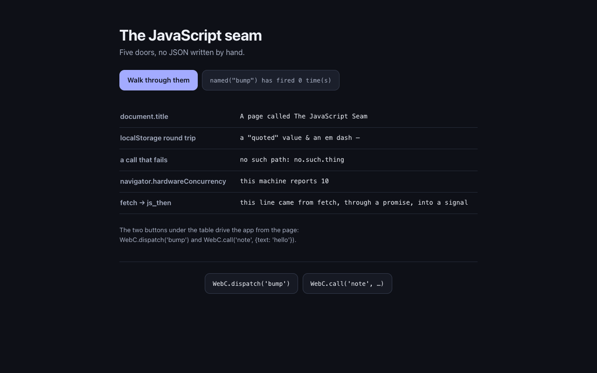

JS interop
The seam to JavaScript: js(), promises, and calls back the other way.

examples/js — screenshot taken from webc dev.webc.json
{
"name": "js",
"mode": "web",
"target": "wasm",
"client": ["src/app.c"],
"dev": { "port": 9998 }
}src/app.c
// WebC — the JavaScript seam, one door at a time.
//
// Five ways across the boundary, each on its own row, each a value rather than a global:
//
// js("path", args…) a call, with arguments typed where C can check them
// js("path") a property read — no function, no arguments, just the value
// r.ok / r.error a failure that belongs to *that* call
// js_then(…, fn, ctx) a promise: the handler runs when it settles
// WebC.call / dispatch the page driving the app, and webc_export_json the door in
//
// Everything the page shows comes from a signal; every row writes one. Nothing here
// parses JSON by hand, writes JSON by hand, or reads a "last error" that a later call
// could have overwritten.
#include <webc/web.h>
#include <webc/js.h>
// A Text is a string this app owns for the life of the render (`fmt`, `text_of`), which
// is what a signal wants to hold — and what a format string prints with `%s`.
state(Text, title_of_page, "—");
state(Text, stored, "—");
state(Text, failure, "—");
state(Text, cores, "—");
state(Text, answer, "—");
state(i64, calls, 0);
// ---------------------------------------------------------------- a promise
// The reply to `fetch` arrives here, possibly seconds later. `r` is the resolved value —
// or the rejection, told apart by `r.ok` and explained by `r.error`.
static void on_reply(WJs r) {
if (!r.ok) {
set(answer, fmt("fetch failed: %s", text_of(r.error)));
return;
}
JVal *v = js_value(r);
JVal *msg = v ? json_get(v, "message") : nullptr;
if (msg && msg->kind == J_STR) {
// One more call from inside the handler, and *before* the reply is used: `r` points
// into the bridge's buffer, and the next call replaces that buffer. The framework
// copies the payload out before the handler runs, so the line below still reads the
// reply — without the copy it would read the next call's result.
js("localStorage.setItem", "webc.demo.reply", msg->s);
set(answer, text_of(msg->s));
} else
set(answer, fmt("the reply was a %s, not an object with a message", js_kind_name(r.kind)));
}
// ---------------------------------------------------------------- what a click does
action(probe) {
// 1. a property read: no arguments means "give me the value"
WJs t = js("document.title");
set(title_of_page, t.kind == JS_STR ? text_of(js_str(t, "—")) : fmt("(no title: %s)", text_of(t.error)));
// 2. a call with two arguments, one of them a string no caller had to escape:
// the quote and the em dash are the framework's problem, not the app's
WJs put = js("localStorage.setItem", "webc.demo", "a \"quoted\" value & an em dash —");
WJs got = js("localStorage.getItem", "webc.demo");
(void)put;
set(stored, got.kind == JS_STR ? text_of(js_str(got, "—")) : fmt("error: %s", text_of(got.error)));
// 3. a call that cannot work. Its failure is *this value*; the calls above keep theirs.
WJs bad = js("no.such.thing");
set(failure, text_of(bad.ok ? str_lit("(it worked?)") : bad.error));
// 4. a number, read as a property and converted with a default: no string, no parse
set(cores, fmt("this machine reports %lld", (long long)js_i64(js("navigator.hardwareConcurrency"), 0)));
// 5. a promise. The call returns now; on_reply runs when the file has been fetched.
// `api.get` is one line in the page (index.html): fetch resolves with a Response,
// and a Response is an object this side has no handle for — by design, so no
// JavaScript object ever has a lifetime the C side must remember to release.
set(answer, fmt("waiting…"));
js_then("api.get", "/data.json", on_reply);
}
// `action_live`: this handler writes one signal and changes nothing structural, so the
// bridge sends the binding's one op and re-renders nothing. Watch it in the console —
// `WebC.diagnostics().ops` goes up by 1 per click, not by the page's ~40.
action_live(bump) { set(calls, get(calls) + 1); }
// The page calls this: `WebC.call('note', {text: '…'})`. The payload arrives decoded, so
// reading a field is a lookup and a string is a string.
webc_export_json(note) {
JVal *v = js_value(in);
JVal *t = v ? json_get(v, "text") : nullptr;
set(stored, t && t->kind == J_STR ? text_of(t->s) : fmt("(no text in the payload)"));
}
// ---------------------------------------------------------------- the view
static void row(const char *label, Text value) {
el("tr") {
el("th") { text(label); }
el("td") { text(value && *value ? value : "—"); }
}
}
// … 37 more lines in the repositorypublic/data.json
{ "message": "this line came from fetch, through a promise, into a signal" }public/index.html
<!doctype html>
<html lang="en">
<head>
<meta charset="utf-8" />
<meta name="viewport" content="width=device-width, initial-scale=1" />
<title>A page called The JavaScript Seam</title>
<meta
name="description"
content="The five doors across the JavaScript seam in WebC: a call, a read, a typed failure, a promise, and the page driving the module."
/>
<link
rel="icon"
href="data:image/svg+xml,%3Csvg xmlns='http://www.w3.org/2000/svg' viewBox='0 0 32 32'%3E%3Crect width='32' height='32' rx='8' fill='%234b56e8'/%3E%3Ctext x='16' y='22' font-family='ui-monospace,Menlo,monospace' font-size='14' font-weight='700' fill='white' text-anchor='middle'%3E%7B%7D%3C/text%3E%3C/svg%3E"
/>
<link rel="stylesheet" href="/style.css" />
</head>
<body>
<!-- the component renders here, from wasm; nothing on this page is server-rendered -->
<div id="root"></div>
<!-- The other direction across the seam: the page calls into the module. Two calls, and
nothing else on this page knows what they do. -->
<footer class="page">
<button onclick="WebC.dispatch('bump')">WebC.dispatch('bump')</button>
<button onclick="WebC.call('note', {text: 'hello from the page'})">WebC.call('note', …)</button>
</footer>
<script>
// A promise that resolves with *data* needs one line of page-side glue: `fetch`
// resolves with a Response, which is an object with no fields a C side can read.
// Keeping that line here, where JavaScript is written, is the trade this seam makes.
window.api = { get: async (url) => (await fetch(url)).json() };
</script>
<script src="/webc.js"></script>
<script>
(async () => {
await WebC.start({ el: '#root', wasm: '/app.wasm' });
})().catch((e) => {
document.querySelector('#root').textContent = 'wasm failed: ' + e.message;
console.error(e);
});
</script>
</body>
</html>public/style.css
/* js: the look of a page that is one table of calls.
The view emits class names; every colour, size and radius is decided here. Two tokens,
one theme: the dark half answers the reader's OS. The page's own two buttons live outside
the component (that is the point of the example), so `main` and `.page` share one column
and the calls sit centered under a hairline — one page, not a component with a stray
paragraph under it. */
:root {
color-scheme: light;
--bg: #f7f8fb;
--surface: #ffffff;
--surface-2: #f3f5fa;
--fg: #14161c;
--muted: #4b5563;
--faint: #667085;
--line: #e4e7ef;
--line-strong: #d2d7e3;
--accent: #4b56e8;
--accent-hover: #3a45d4;
--accent-soft: rgba(75, 86, 232, 0.09);
--on-accent: #ffffff;
--radius: 11px;
--font: system-ui, -apple-system, "Segoe UI", Roboto, "Helvetica Neue", sans-serif;
--mono: ui-monospace, SFMono-Regular, Menlo, Consolas, monospace;
}
@media (prefers-color-scheme: dark) {
:root {
color-scheme: dark;
--bg: #0e1017;
--surface: #161923;
--surface-2: #1b1f2b;
--fg: #eef1f8;
--muted: #a8b0c4;
--faint: #98a1b6;
--line: #262b39;
--line-strong: #333a4c;
--accent: #8b95ff;
--accent-hover: #a3abff;
--accent-soft: rgba(139, 149, 255, 0.14);
--on-accent: #10131c;
}
}
* { box-sizing: border-box; }
html { -webkit-text-size-adjust: 100%; }
body {
margin: 0;
min-height: 100dvh;
background: var(--bg);
color: var(--fg);
font: 16px/1.55 var(--font);
-webkit-font-smoothing: antialiased;
}
/* One column for both halves of the page: the component renders into #root, the two calls
in the page's own markup sit below it, and they line up because the measure is shared. */
main,
.page {
width: min(48rem, 100% - 2.5rem);
margin-inline: auto;
}
main { padding: 3.5rem 0 0; }
h1 {
margin: 0 0 0.4rem;
font-size: clamp(1.55rem, 1.15rem + 1.5vw, 2.05rem);
line-height: 1.15;
letter-spacing: -0.022em;
font-weight: 700;
}
.lede {
margin: 0 0 1.6rem;
color: var(--muted);
font-size: 1rem;
}
/* The first paint, before the module has drawn anything. */
#root:empty::after {
content: "loading the module…";
display: block;
padding: 3.5rem 0 0;
color: var(--faint);
font: 500 0.85rem/1 var(--mono);
}
/* ---- controls: one shape, on both sides of the seam ------------------------------- */
.actions {
display: flex;
flex-wrap: wrap;
gap: 0.6rem;
margin: 0 0 1.9rem;
}
/* … 149 more lines in the repository */